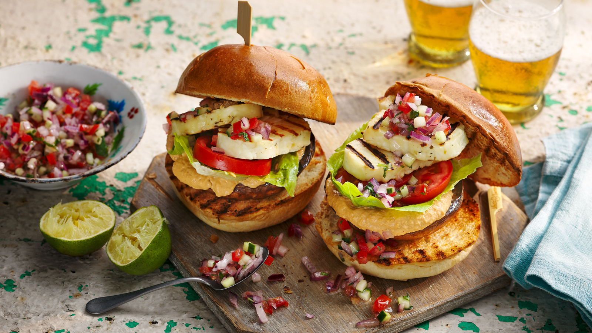

Halloumi Burger

Ingredients:
- 2 tbsp olive oil
- 200g halloumi chesse, thickly sliced
- 2 brioche buns, cut in half
- 2 tbsp finely chopped onion
- 2 tbsp finely chopped tomato
- 2 tbsp finely chopped fresh mint
- 1 lime, juice only
- 4 tbsp hummus
- 1 large tomato, thickly sliced
- 4 romaine lettuce leaves, roughly torn
- salt and freshly ground black pepper
Method:
- Heat a griddle pan or barbecue until hot. Brush half the oil over the mushrooms and season well. Place on the griddle pan or barbecue and cook for 6–8 minutes, turning them over halfway through cooking.
- Meanwhile, brush the remaining oil over the halloumi slices and cut-side of the brioche buns. Cook for 2–3 minutes, or until lightly charred.
- Mix together the chopped onion, tomato, cucumber and mint with the lime juice and season well.
- To assemble the burgers, put a mushroom on the bottom brioche half and spread over the hummus. Top with the sliced tomato, lettuce and halloumi. Spoon over the onion and tomato relish, sandwich with the brioche lid and eat straight away.